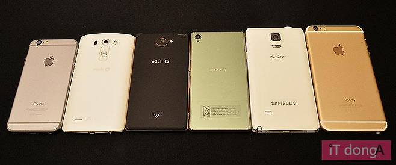

스마트폰
스마트폰은 컴퓨터를 결합한 무선 휴대전화기이다. PC에서 실행되는 운영체제보다 작게 만든 모바일
운영체제를 탑재하여 인터넷 검색, 전자우편, 간단한 문서 편집, 카메라, 오디오 및 비디오 재생 등 PC의
기능을 거의 모두 갖추고 있다.
목차
역사
안드로이드폰
아이폰
샘플
역사
최초의 스마트폰은 **IBM 사이먼(1994)**으로 터치스크린과 이메일 등 기본 기능을 갖추고 있었습니다.
2007년 아이폰이 멀티터치 스크린과 앱스토어를 도입하며 스마트폰 시장을 혁신했고, 2008년 안드로이드
가 확산되며 애플과 양강 체제가 형성되었습니다.
안드로이드
안드로이드(Android)**는 구글이 개발한 오픈소스 모바일 운영체제로, 2008년부터 다양한 스마트폰
제조사에서 사용되기 시작했습니다.오픈소스 기반이라 누구나 자유롭게 개발하고 커스터마이징할 수 있어
빠르게 확산되었고, 애플 iOS와 함께 스마트폰 시장을 양분하게 되었습니다.
아이폰
아이폰(영어 : iPhone)은 2007년 1월 9일, 애플이 발표한 휴대 전화 시리즈이다. 미국 샌프란시스코에서
열린 맥월드 2007에서 애플의 창업자 중 한명인 스티브 잡스가 발표했다.
샘플
스마트폰샘플
